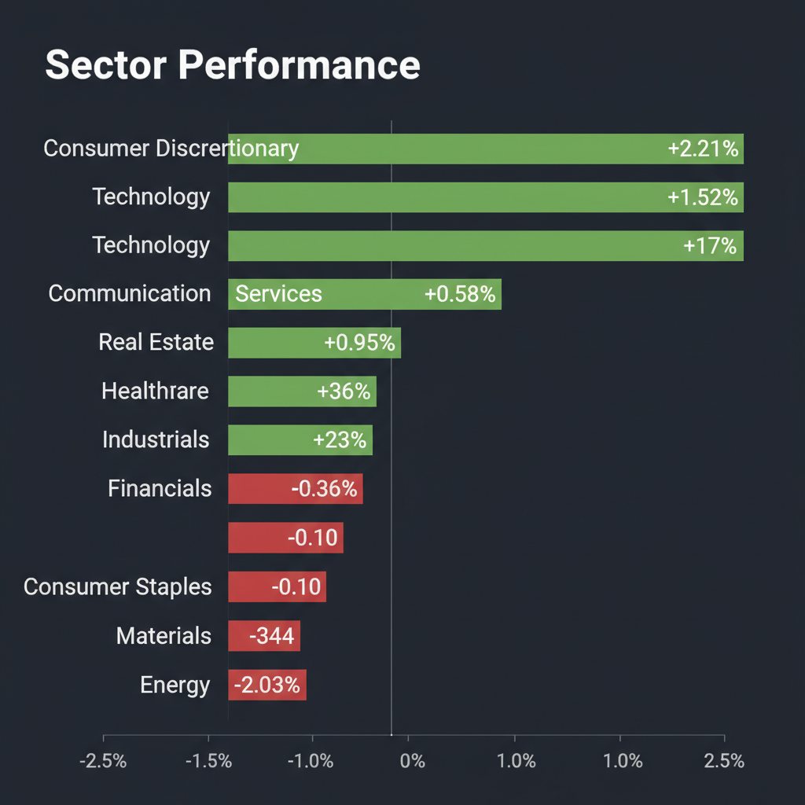
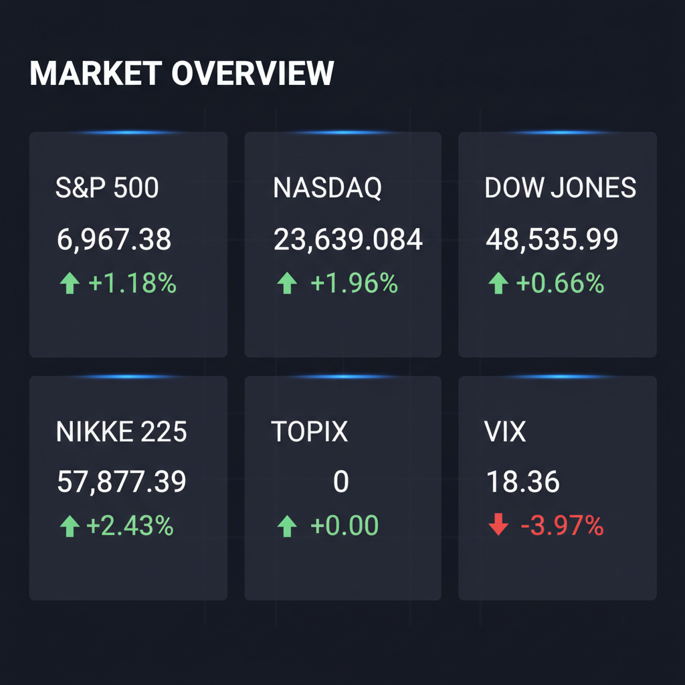

Daily Investment Report - 2026-04-15
Generated: 2026/4/15 7:24:27


チームミーティングの分析結果を統合し、投資家向けの最終レポートを以下の通り作成いたしました。現在の極端な過熱相場と水面下のマクロリスクを考慮し、防衛的かつ厳選した投資戦略を提示しています。
1. エグゼクティブサマリー
- 日米の株式市場は、イラン協議再開への期待と強気な業績予測（Q1増益率19%期待）を背景に歴史的な急騰を演じており、テクニカル面では極めて強い過熱感（買われすぎ）を示しています。
- 一方で、米国内のディーゼル燃料費の過去最高更新やIMFの成長下方修正など、実体経済ではインフレ再燃とスタグフレーション（物価高×成長鈍化）のリスクが急速に高まっています。
- 投資家は過度な楽観論から距離を置き、大型ハイテク株の利益確定を進めるとともに、インフレ環境下でも高い価格転嫁力を持つ優良な中小型株や、地政学リスクのヘッジとなるエネルギー株への資金シフトを行うべき局面です。
2. 注目銘柄リスト
強気（買い推奨）
- マニー（東証: 7730） [時価総額: 約2,000〜3,000億円の中型株]
手術用縫合針などのニッチな医療インフラ市場で世界トップクラスのシェアを持ちます。営業利益率が30%超と非常に高く、原材料費や物流費のインフレを価格転嫁しやすいため、現在のマクロ環境下でも極めて安全性の高い優良銘柄です。
- 日東電工（東証: 6988） [時価総額: 中堅〜大型クラス]
「修理する権利」に対応した環境配慮型の高付加価値製品が好調で、粗利率の向上が見込めます。強力なバランスシートと積極的な株主還元姿勢を持ち、現在の相場でもバリュエーションの過熱感がない手堅い銘柄です。
中立（様子見）
- Rocket Lab（NASDAQ: RKLB） [時価総額: 約20億ドルの小型株]
レーザー光通信企業Mynaricの買収により、次世代宇宙インフラの覇権を握るポテンシャルを秘めたテンバガー候補です。しかし、現状はフリーキャッシュフローがマイナスの赤字グロース株であり、高金利下での資金調達リスクがあるため、テクニカルな底打ちシグナルを待つべきです。
- ベイカレント・コンサルティング（東証: 6532） [時価総額: 中大型株]
好決算を発表し業績の伸びは魅力的ですが、市場の期待値が高くPERの変動幅が大きいです。飛びつき買いは避け、利益確定売りによる「窓埋め」や「初押し」のタイミングを待ってからのエントリーが推奨されます。
- note（東証: 5243） [時価総額: 小型株]
クリエイターエコノミーの拡大とAI導入による粗利率改善で、赤字から黒字への転換点（Jカーブの底）に位置しています。今後の持続的なキャッシュフロー創出が確認されるまでは、少額の打診買いに留めるのが無難です。
弱気（警戒）
- ユナイテッド航空 (NASDAQ: UAL) / アメリカン航空 (NASDAQ: AAL) [時価総額: 大型株]
合併打診のニュースで注目を集めていますが、航空業界特有の構造的な高負債、独占禁止法の高いハードル、そして何より過去最高水準の燃料コスト（ディーゼル高騰波及）に直面しており、典型的なバリュートラップの危険があります。
- リンガーハット（東証: 8200） [時価総額: 約500億円の小型株]
ブランド価値は向上していますが、外食産業の薄利な構造に対し、物流コストの圧迫と国産野菜のコスト増が損益計算書を激しく傷つけるリスクがあり、利益率の大幅改善が確認できるまで警戒が必要です。
- Obsidian Therapeutics (NASDAQ: OBX) [時価総額: 新興小型株]
巨額の資金調達に成功し合併上場を果たすバイオテック企業ですが、治験の失敗リスクが高く、金利が高止まりする現在のマクロ環境においては、ボラティリティが高すぎる投機的な銘柄です。
3. セクター推奨ランキング
足元では原油価格の下落で売り込まれていますが、ホルムズ海峡の緊張継続など地政学リスクが顕在化した際、ポートフォリオ全体の下落を相殺する最強の「ヘッジ機能」を果たします。
労働力不足やインフレを克服するための自動化投資（農機等）や、地政学リスクに対応する防衛（ドローン網）など、マクロの逆風を解決するための設備投資資金が構造的に流入しやすいセクターです。
景気動向に左右されにくく、インフレ下でも価格転嫁しやすいディフェンシブな特性を持つため、市場の調整（下落）局面において強い下値抵抗力を発揮します。
- 4位：テクノロジー・AI関連（Technology）
業績の伸びは力強いものの、すでに「完璧なシナリオ」が株価に織り込まれており、テクニカル面で買われすぎの極致に達しています。新規の買いは避け、規律ある利益確定を行うフェーズです。
- 5位：一般消費財・航空（Consumer Discretionary / Airlines）
インフレの長期化による消費の冷え込みと、ディーゼル等の物流・エネルギーコストの高騰による利益率圧迫を最も直接的に受けるため、最優先で回避すべきセクターです。
4. 今週の注目イベント
- 近日中（今後2日以内）： トランプ氏や国連が示唆する「米国・イラン間の協議再開」の動向（市場の最大のリスクオン/オフ要因）
- 今週随時： ホルムズ海峡における船舶への軍事的干渉およびサプライチェーンへの影響確認
- 今週随時： 米国主要企業のQ1決算発表（市場の「19%増益」という高いコンセンサスをクリアできるかの確認）
- 今週随時： 任天堂などハードウェア企業の株価動向（部材インフレと為替の影響を見極める先行指標）
5. リスク要因
- スタグフレーション・ショック： イラン協議が土壇場で決裂し、ホルムズ海峡の封鎖や原油高騰が起きることで、インフレの再燃と経済成長の鈍化が同時に襲いかかるリスク。
- 決算のアーニングス・ミス連鎖： 「19%増益」という極端に高い市場のハードルに対し、物流費高騰などを理由に企業がガイダンスをわずかでも下方修正した場合に起こるパニック売りリスク。
- VIXとテクニカルの「無言の警告」： 株価急騰にもかかわらずVIX指数が18台から下がらない「弱気の乖離」や、RSI過熱など、機関投資家が暴落ヘッジを水面下で進めている急落リスク。
6. アクションアイテム
- ポートフォリオ内の「マグニフィセント・セブン」をはじめとする大型ハイテク株のポジションを半分以下に縮小（トリム）し、直ちにキャッシュ（現金）比率を引き上げる。
- 急騰している銘柄への新規の飛びつき買いを厳禁とし、保有している全ポジションに対して「5日移動平均線割れ」などを基準としたトレイリングストップ（損切り・利益確定ラインの引き上げ）を設定する。
- 暴落時の保険（ヘッジ）として、現在下落しているエネルギー関連株（XLE等）の打診買いを検討する。
- 新規の資金を投入する場合は、高い営業利益率（30%超）と無借金経営を誇り、インフレを価格転嫁できるマニーのような「ディフェンシブな中小型バリュー株」のみに限定する。